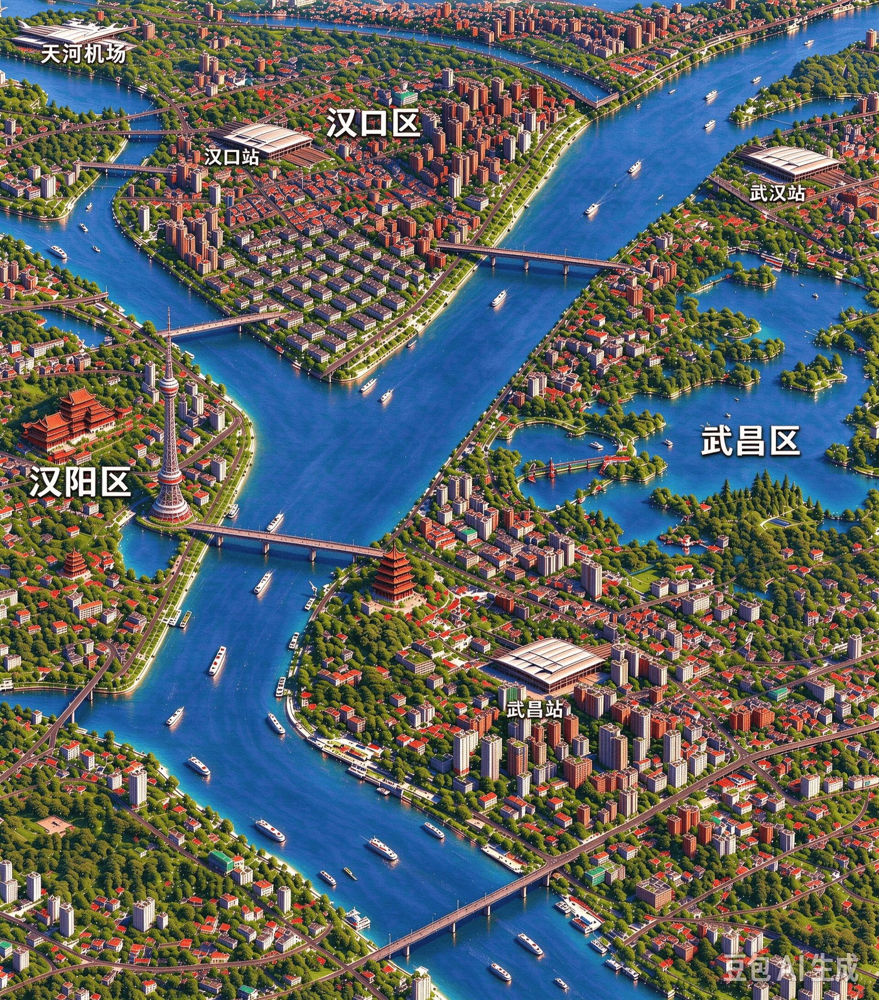

CITY EXPLORER · GSAP INTERACTIVE MAP
武汉 · 城市探索地图
拖动地图以查看更多

龟山公园
1
龟山公园
晴川阁
2
晴川阁
武汉长江大桥
3
武汉长江大桥
辛亥博物馆
4
辛亥博物馆
黄鹤楼
5
黄鹤楼
中华路城市阳台
6
中华路城市阳台
广八路
7
广八路
凌波门
8
凌波门
湖北省博物馆
9
湖北省博物馆
湖北美术馆
10
湖北美术馆
听涛景区
11
听涛景区
磨山景区
12
磨山景区
光谷步行街
13
光谷步行街
吹笛景区
14
吹笛景区
鼓架山
15
鼓架山
落雁景区
16
落雁景区
武汉城市学院
17
武汉城市学院
欢乐谷
18
欢乐谷
四美塘文化公园
19
四美塘文化公园
月亮湾城市阳台
20
月亮湾城市阳台
沙湖公园
21
沙湖公园
楚河汉街&SKP
22
楚河汉街&SKP
水塔街美食城
23
水塔街美食城
江汉路步行街
24
江汉路步行街
汉口江滩
25
汉口江滩
月湖风景区
26
月湖风景区
汉阳造
27
汉阳造
归元寺
28
归元寺
南岸嘴江滩公园
29
南岸嘴江滩公园
兰陵路美食街
30
兰陵路美食街
黎黄陂路步行街
31
黎黄陂路步行街
巴公房子
32
巴公房子
咸安坊
33
咸安坊
SPU社区·江岸智民里
34
SPU社区·江岸智民里
粮道街
35
粮道街
宝通寺
36
宝通寺
武商梦时代
37
武商梦时代
昙华林
38
昙华林
武汉大学
39
武汉大学
华中科技大学
40
华中科技大学
SPU社区·光谷
41
SPU社区·光谷
光谷空轨
42
光谷空轨
中国建筑科技馆
43
中国建筑科技馆
湖北人形机器人创新中心
44
湖北人形机器人创新中心
复位视图
编辑景点
拖动景点定位 · 点击空白新增 · 点选景点改属性
导出 JSON
导入 JSON
恢复默认
退出编辑
线路筛选
0 / 9
G1
G2
G3
G4
G5
G6
G7
G8
G9
未筛选
×
DISCOVER WUHAN
地点名称
地点介绍
地点分类